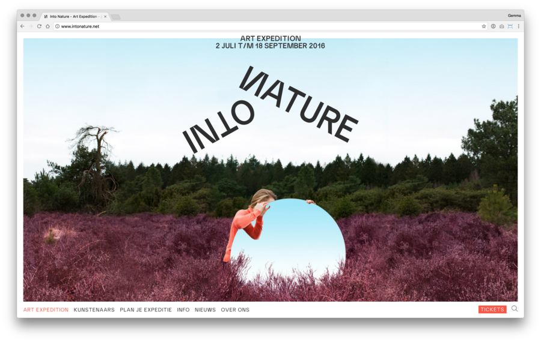
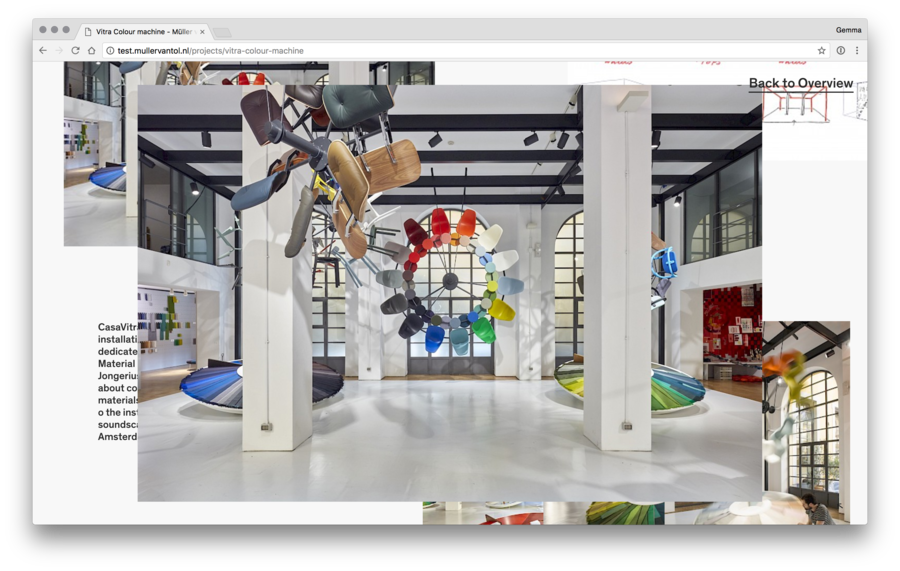
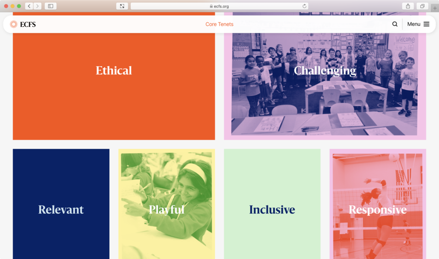
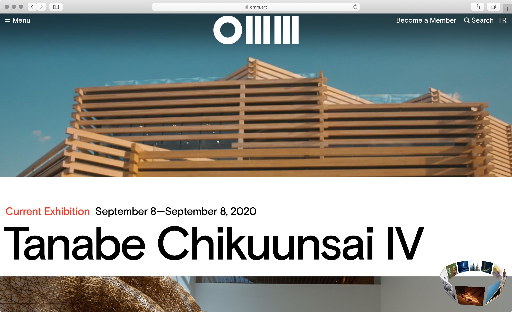

## Core Languages ## Digital
### 👋 I'm Gemma.




## Fluidity Requires you to think in terms of systems and relationships
## Interactivity Changes in response to context, environment and users
## Ubiquity and power Our entire lives are now mediated through digital media
Why does it matter? Because we live in media, as fish live in water.
Ted Nelson
## What we'll be learning Digital design mindset, principles, processes and technologies (formal, conceptual, practical) Wider social, political and historical context of digital media How it's changed how we think, communicate and design Understanding digital networks as a landscape and medium
### Now we are living primarily in the digital space, a space which instead of being defined by architecture, is defined by graphic design, the language of the interface. Ben DuVall
## Workshops How the internet has changed over time, the metaphors we use to imagine and describe it and what it could become How different platforms and networks influence meaning and content Design principles and processes for dynamic media The basics of HTML, CSS, version control and what you need to know to publish online The political, social and conceptual history of digital media